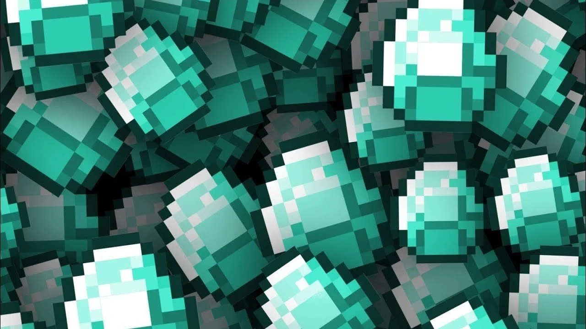
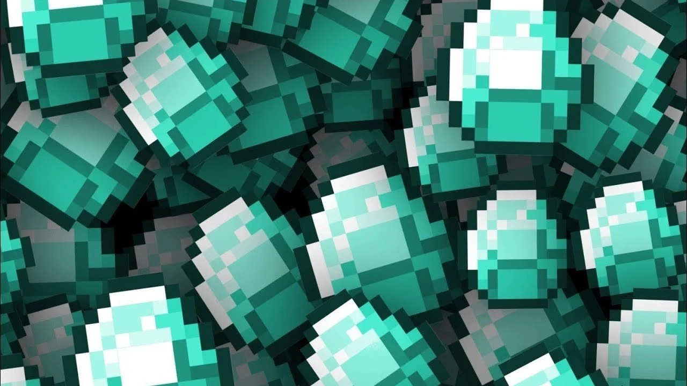

майнкрафт
компьютерная инди-игра в жанре песочницы, созданная шведским программистом Маркусом Перссоном и выпущенная его студией Mojang AB. В 2009 году Перссон опубликовал начальную версию игры; в конце 2011 года была выпущена стабильная версия для компьютеров Windows, Linux и macOS с распространением через официальный сайт. В последующие годы Minecraft была портирована на мобильные устройства под управлением Android, iOS и Windows Phone; на игровые приставки PlayStation 3, PlayStation 4, PlayStation Vita, Xbox 360, Xbox One, New Nintendo 3DS, Nintendo Switch и Wii U; и другие платформы. В 2014 году корпорация Microsoft приобрела права на Minecraft вместе со студией Mojang AB за 2,5 миллиарда долларов. В 2017 году была выпущена мультиплатформенная версия игры, объединившая различные версии для разных устройств
Перссон написал Minecraft на языке программирования Java с использованием библиотеки графического вывода LWJGL, черпая идеи из таких игр, как Dwarf Fortress, Dungeon Keeper и Infiniminer[en][⇨]. Minecraft даёт в распоряжение игрока процедурно генерируемый и изменяемый трёхмерный мир, полностью состоящий из кубов — его можно свободно перестраивать, создавая из этих кубов сложные сооружения — эта особенность делает игру схожей с различными конструкторами, такими как Lego. Minecraft не ставит перед игроком каких-либо конкретных целей, но предлагает ему свободу действий: например, игрок может исследовать мир, добывать полезные ископаемые, сражаться с противниками и многое другое[⇨]. Игра включает в себя дополнительные режимы, например, «выживание», где игроку нужно самому добывать ресурсы, и «творчество», где у игрока эти ресурсы есть в неограниченном количестве[⇨]. Механика «редстоуна» (англ. Redstone) позволяет создавать в Minecraft сложные логические схемы — тем самым игра может служить виртуальным конструктором для программистов и инженеров
самая популярная руда в майнкрафте это алмазы!
 
